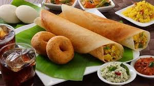
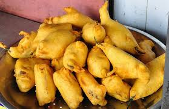
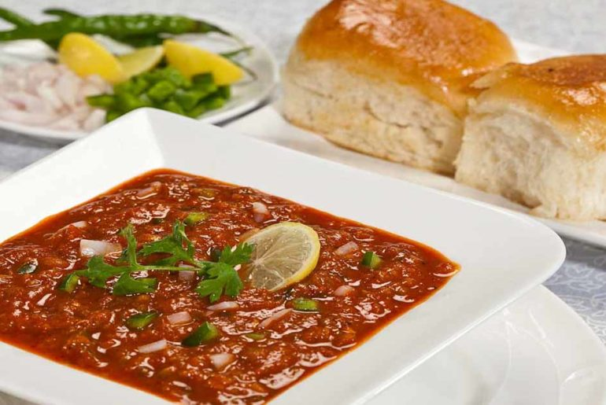
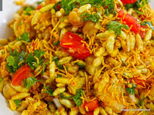

| S.No. | States | Description |
|---|---|---|
| 1. |  | South Indian Food is a huge part of what makes South India such a great destination to travel is its rich and varied cuisine. While South Indians are not afraid to experiment with their food, it is their old traditions and recipes that make South Indian cuisine such a unique experience. From the vegetarian varieties of Udipi and the festive fare of Tamil Nadu to the beef and seafood delicacies of Kerala and Konkan Karnataka, there’s something for every kind of food addict in South India! If you’re heading down south, here are some of the best and most popular traditional dishes that you cannot miss. |
| 2. |  | Mirchi Bada is a spicy Indian snack consisting of chili (mirchi) and potato or cauliflower stuffing battered and fried, served hot with tomato sauce or occasionally with mint and tamarind chutney. Banana pepper is used for making mirchi bada. The mirchi bada of Jodhpur, Rajasthan is famous, as the water in that region lends it a unique taste. It combines well with another Jodhpur speciality, mawa kachori, dipped in sugary syrup. |
| 3. |  | Pav Bhaji is Settle for the night with this delicious Indian street food dish. Perfectly cooked vegetables are spiced with pav bhaji masala, a fragrant blend of coriander, cumin, cloves, cinnamon, black pepper, fennel, and cardamom. Piled atop a toasty, sweet bun, it’s sure to satisfy vegetarians and meat lovers alike! |
| 4. |  | Bhel puri is a light refreshing Indian snack food that comes together in minutes. Loaded with crispy puffed rice, tomatoes, onions and boiled potatoes seasoned with a few different chutneys, it's a delicious savory snack on a hot muggy day. |